互惠动态
|
|
教育的最高境界，是鼓励孩子成为一个平凡而幸福的人！
这世上的大多数孩子，
都会成长为一个平凡的普通人。
所以，比让孩子成功更重要的是，
让孩子幸福。
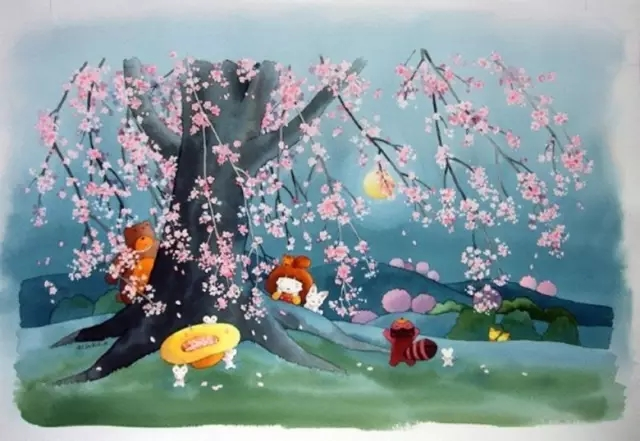
别怕孩子玩电脑，
这是他们未来的工作和生活方式。
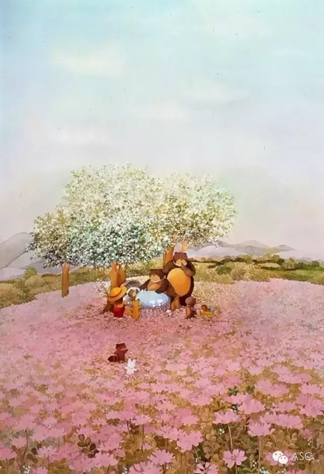
一开始别太在乎孩子成绩，
要关心他是否喜欢学校。
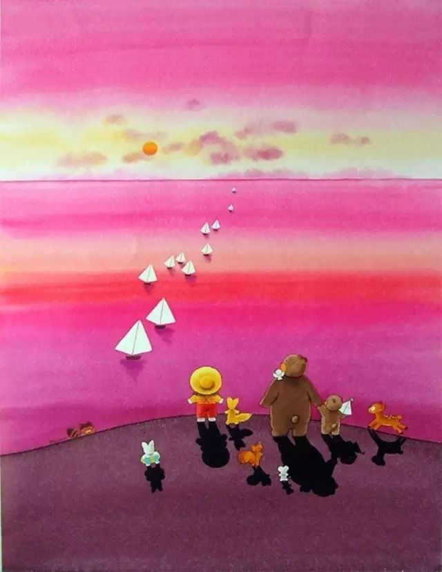
除了赞美，还要有惩罚，
不过惩罚教育不等于棍棒教育。
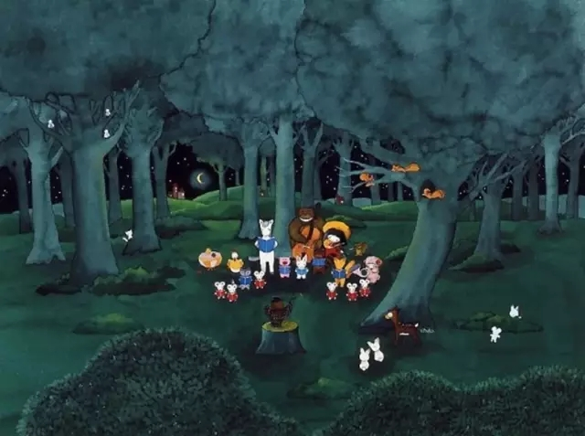
让他坚持一项体育运动，
篮球、足球、羽毛球、跳绳、跑步……都好。
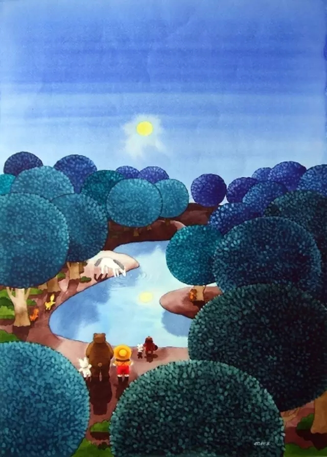
为他培养一种终生受用的兴趣，
不论高雅还是通俗，不论大众还是小众，
音乐，美术，文学，写作，集邮，手工，
这些都很好。
但请不要让他仅仅为了考级或升学去学。
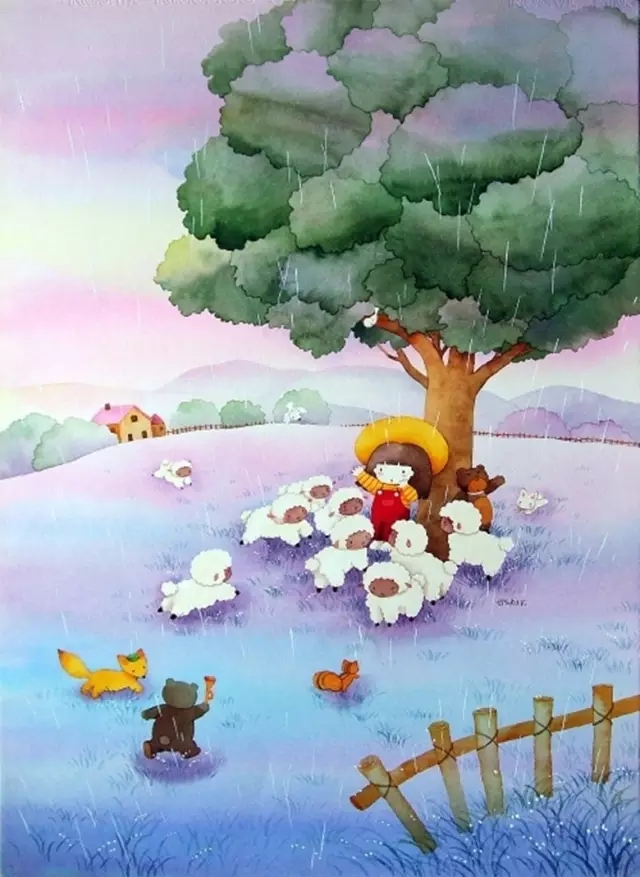
试试和孩子一起看课外读物。
好书是孩子受益一生的良师益友。
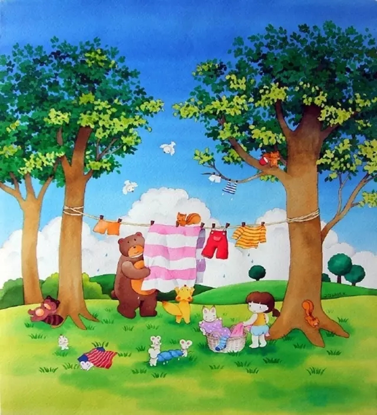
耐心陪孩子玩游戏，
即使你认为他的游戏内容很无聊。
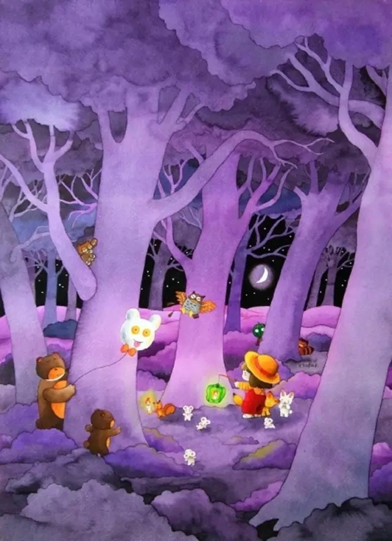
当他耍赖时，绝不妥协。
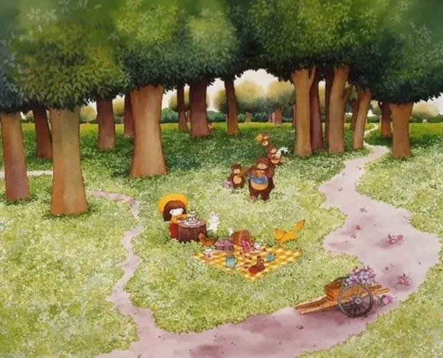
每月带孩子逛一次书店，
每次两小时以上。
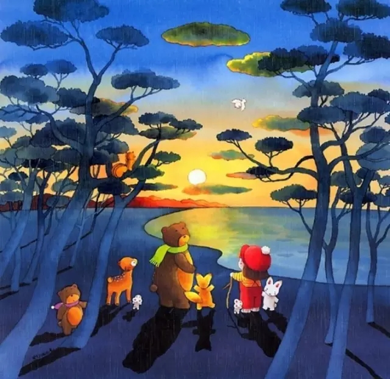
小孩子之间的问题让他们自己去解决。
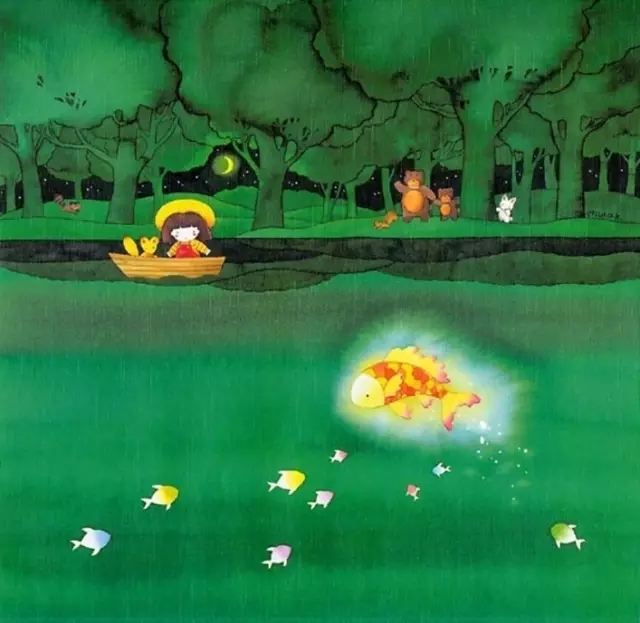
除了成长中教给他诚信，善良，
孝顺，尊重，原则等
基础的东西外，也要包容并认同他个性，
专属的特质，毕竟他是唯一的。
最后：灵魂要自由，
思考要独立，活得要真实。
请鼓励你的孩子做一个幸福的普通人
多年来靠抢跑培养了这么多尖子学生、竞赛的获奖者、金牌得主，可我们并没有看到当初我们期望的从他们之中产生很多科学领域的大师，至少现在还没有。
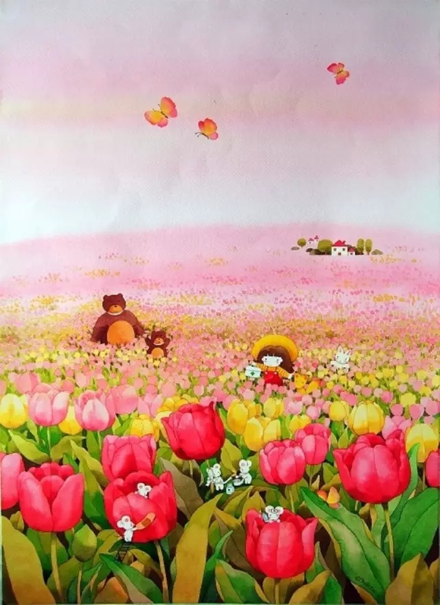
所以我们每个人对自己的孩子都有这样的过程，开始出生的时候有很多梦想，希望孩子上一个好学校、有一个好成绩，慢慢我们的期望逐渐降温。
我们期望这个孩子能够正常毕业、升学、就业，将来能够成家、生儿育女、生活稳定、工作稳定、别下岗，能够在三、四十岁的时候身体健康、家庭和谐。
进入老年，你希望孩子孝顺，最后你不能动的时候，所有最初的梦想都没有了，那时候的梦想就是他能在我的身边给我倒一杯水。
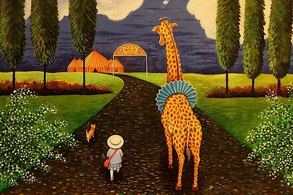
其实我们每个人心路都是这样的一个过程，最开始有非常高的崇高理想，但是最后当我们已经垂老的时候，才真正明白其实我们很多时候的培养都是不正确的。
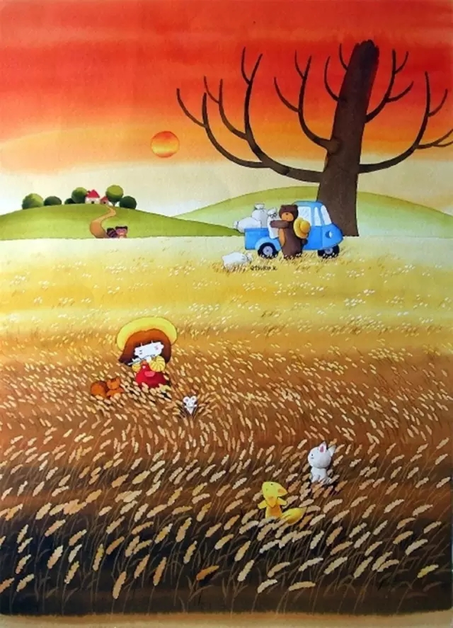
鼓励孩子成为一个平凡而幸福的普通人

关于互惠，您了解得够多么？
请外国学生来家庭照顾孩子，辅导孩子外语？
只了解这些是不够的！
获取更多信息请参考以下方式：
联系ASC：
电话：86-21-61116069(上海中心）
86-25-66065662（南京中心）
手机：15601666586（可加微信）
Q Q：3259637585
微信：asc-center
邮箱：info@asc-center.com
网站：www.asc-aupair.com